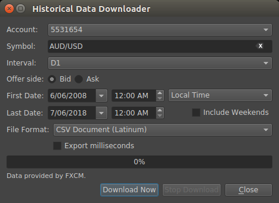

Historical Data Downloader File Formats¶
Available for FXCM connections only
To open Historical Data Downloader
- In the main menu select File, then point to Export and click Historical Data.
CSV Document (Latinum)¶
- Tick Format
- Bid and Ask are both saved, ignoring the selection made in the downloader window.
yyyy.MM.dd hh:mm:ss,bid,ask,volume - Minute Bars Format
yyyy.MM.dd hh:mm:ss,open,high,low,close,volume- Daily Bars Format
yyyy.MM.dd hh:mm:ss,open,high,low,close,volume- Filename Format
symbol_interval_offer-side_start-date_end-date.csv
CSV Document (MetaTrader 4)¶
- Tick Format
- Not supported
- Minute Bars Format
yyyy.MM.dd hh:mm:ss,open,high,low,close,volume- Daily Bars Format
yyyy.MM.dd hh:mm:ss,open,high,low,close,volume- Filename Format
symbol_interval_offer-side_start-date_end-date.csv
Plain Text Document (NinjaTrader 7)¶
- Tick Format
yyyyMMdd hhmmss;price;volume- Minute Bars Format
yyyyMMdd hhmmss;open price;high price;low price;close price;volume- Daily Bars Format
yyyyMMdd;open price;high price;low price;close price;volume- Filename Format
symbol.offer-side.txt